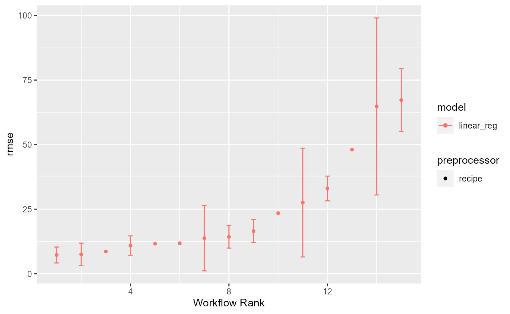
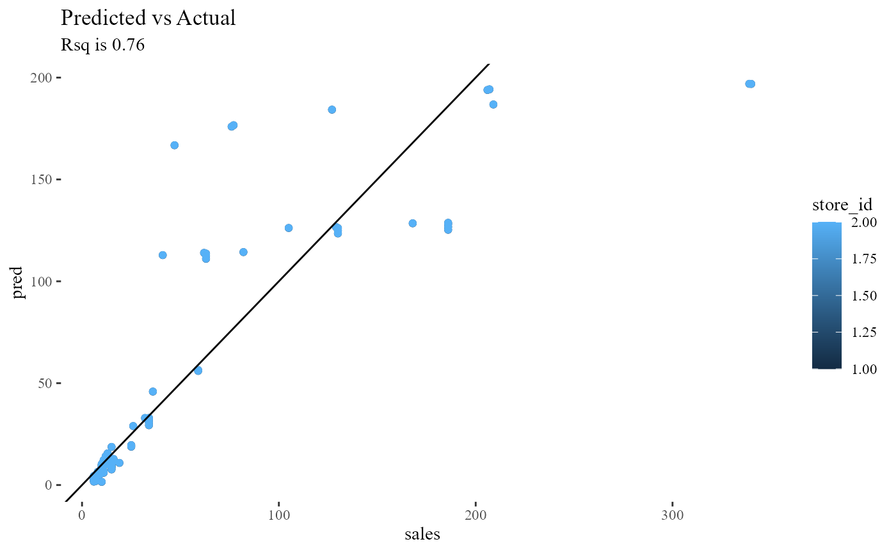
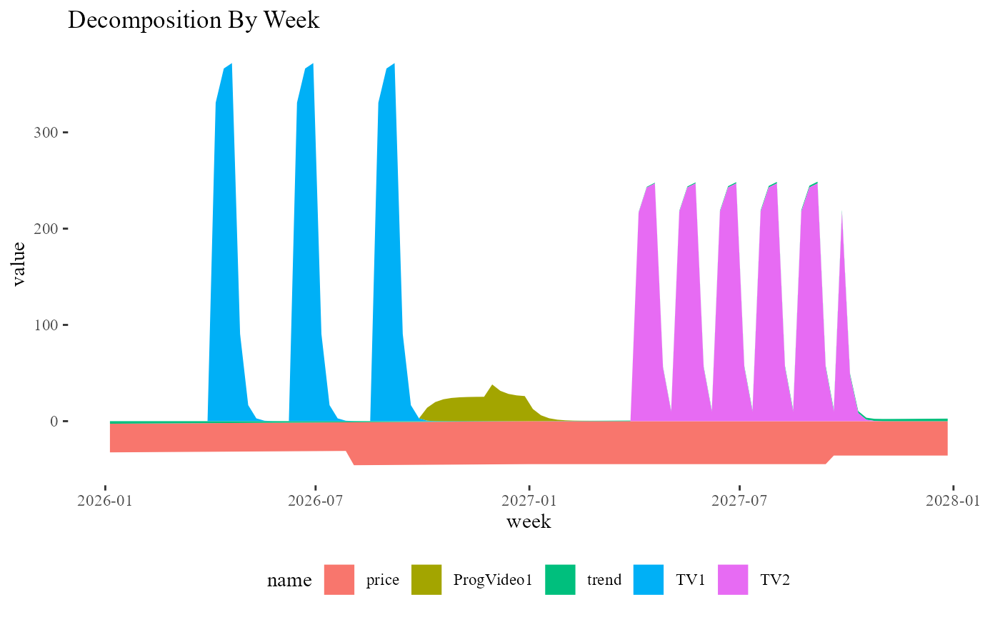

hyperparameter-and-formula-search.Rmd
library(mostlytidyMMM)First, let’s import all 3 tabs of a mostlytidyMMM config file.
suppressMessages(suppressWarnings(library(recipes)))
suppressMessages(suppressWarnings(library(tune)))
suppressMessages(suppressWarnings(library(dials)))
suppressMessages(suppressWarnings(library(tidyverse)))
suppressMessages(suppressWarnings(library(workflowsets)))
suppressMessages(suppressWarnings(library(tidymodels)))
suppressMessages(suppressWarnings(library(multilevelmod)))
suppressMessages(suppressWarnings(library(rethinking)))
suppressMessages(suppressWarnings(library(mostlytidyMMM)))
#get the control file:
control_file<-system.file('example model control.xlsx',package='mostlytidyMMM')
#get each relevant table of the control file:
variables<-readxl::read_xlsx(control_file,'variables')
role_controls<-readxl::read_xlsx(control_file,'role controls')
workflow_controls<-readxl::read_xlsx(control_file,"workflow") A key feature of the package is the ability to set a range of adstock and saturation parameter values by media channel.
This is handled by assigning role2 values to varnames in the ‘variables’ tab. Other details about each variable are also present.
variables
#> # A tibble: 12 x 10
#> start_name varname role role2 prior sign retention asymptote
#> <chr> <chr> <chr> <chr> <dbl> <chr> <lgl> <lgl>
#> 1 product product pred~ group NA NA NA NA
#> 2 place store pred~ group NA NA NA NA
#> 3 week week time~ time NA NA NA NA
#> 4 y sales outc~ NA NA NA NA NA
#> 5 price price pred~ price -1 <=0 NA NA
#> 6 TV1 TV1 pred~ tv 1 >=0 NA NA
#> 7 TV2 TV2 pred~ tv 1 >=0 NA NA
#> 8 ProgVideo1 ProgVideo1 pred~ prog~ 1 >=0 NA NA
#> 9 spend_TV1 spend_TV1 post~ tv NA NA NA NA
#> 10 spend_TV2 spend_TV2 post~ tv NA NA NA NA
#> 11 spend_ProgVideo1 spend_ProgVideo1 post~ prog~ NA NA NA NA
#> 12 trend trend pred~ trend NA NA NA NA
#> # i 2 more variables: saturation_speed <lgl>, prior_sd <dbl>The role2 assignment values should match the rows in the ‘role controls’ tab, which exists to define the range of retention and saturation parameters available to each channel/role2 value.
role_controls
#> # A tibble: 2 x 7
#> role asymptote_low asymptote_high saturation_speed_low saturation_speed_high
#> <chr> <dbl> <dbl> <dbl> <dbl>
#> 1 progr~ 100 900 0.0001 0.009
#> 2 tv 100 900 0.0001 0.006
#> # i 2 more variables: retention_low <dbl>, retention_high <dbl>If the variables table includes fixed values of asymptote, saturation_speed, or retention, then the recipe step for that hyper-parameter for that variable will not be set to a tuneable value. There is a known bug: If the variable table fixes any of the hyperparameters, the others are left to be searched over the default range, not the range set on the role_controls table.
And the ‘workflow’ tab has controls for the modeled variable, if hyperparameter tuning will happen, and if either the seasonality specification or the random effects searches will run.
workflow_controls
#> # A tibble: 9 x 3
#> desc Value R_name
#> <chr> <chr> <chr>
#> 1 Which variable are we modeling? sales Y
#> 2 Run a hyper parameter tuning process? If FALSE, will use saved ~ TRUE tune_~
#> 3 saved hyper parameter tibble NA saved~
#> 4 Find best seasonality spec? TRUE searc~
#> 5 seasonality interactions to test? store inter~
#> 6 number of fourier terms to use for seasonality (up to 5; 2 is ro~ 1 fft_t~
#> 7 should different random effects be tested? TRUE searc~
#> 8 random effects intercepts -- comma separated list of categorical~ (1|s~ list_~
#> 9 random slopes (TV1~ list_~To demonstrate how this works, we’ll import some data and prepare it. In the code block below, the add_fourier_vars(), add_groups_and_sort(), and rename_columns_per_controls are functions from the mostlytidyMMM package to use the configuration tables to prepare the data for model searching and final estimation.
data1<-read.csv(system.file('example2.csv',package='mostlytidyMMM'))|>
rename_columns_per_controls(variable_controls=variables)|> mutate(week=as.Date(week,"%m/%d/%Y"))|>
add_fourier_vars(vc=variables) |> add_groups_and_sort(vc=variables) Because mostlytidyMMM leverages the tidymodels’ packages for model and hyperparameter tuning, it include a function to produce a recipe (ie a pre-processor) from the configuration files.
recipe3<-create_recipe(data_to_use=data1,
vc=variables,
mc=role_controls,
wc=workflow_controls)In this case, with the workflow_controls table looking for hyperparameter tuning (ie R_name == ‘tune_this_time’ has Value==“TRUE”), so the created recipe uses the tune and dials packages, which can be seen by reading the printout or checking that it needs to be tuned with the provided function:
recipe3
#> Recipe
#>
#> Inputs:
#>
#> role #variables
#> group 2
#> outcome 1
#> postprocess 3
#> predictor 17
#> price 1
#> programmatic 2
#> time 11
#> time_id 1
#> trend 1
#> tv 4
#>
#> Operations:
#>
#> Adstock Transformation with retention tune on Adstock Transformation with retention programmatic_retention onhas_role("programmatic")
#> Saturation (asymptote= tune saturation_speed= tune Transformation on Saturation (asymptote= programmatic_asymptote saturation_speed= programmatic_saturation_speed Transformation onhas_role("programmatic")
#> Adstock Transformation with retention tune on Adstock Transformation with retention tv_retention onhas_role("tv")
#> Saturation (asymptote= tune saturation_speed= tune Transformation on Saturation (asymptote= tv_asymptote saturation_speed= tv_saturation_speed Transformation onhas_role("tv")
#> Variables selected -has_role("postprocess")
#> Novel factor level assignment for all_of(<chr: "product", "store">)
#> Variable mutation for all_of(<chr: "product", "store">)
check_if_needs_tune(recipe3)
#> [1] TRUEBecause seasonality and duration of adstock are very likely influence each other, or at least be confoundable, mostlytidyMMM searches for those specifcations together (if both are enabled). This is done by combining the recipe with hyperparameters set to tune() and a list of possible model formula.
Note that, for speed, model testing is done with lm or lmer() and not bayesian models. This may change over time.
The make_list_of_fft_formulae does what it’s name says – note this is 4 different models to test!
fft_formulae0<-make_list_of_fft_formulae(workflow_controls,recipe3)
#split the output into two lists, one for formula and one for workflow config tables:
#list must have names for workflowsets
formulae<-fft_formulae0[[1]]
names(formulae)<-as.character(1:length(formulae))
configs_fft_options<-fft_formulae0[[2]]
length(formulae)
#> [1] 3
formulae[[1]]
#> [1] "sales ~ price + TV1 + TV2 + ProgVideo1 + trend"
formulae[[2]]
#> [1] "sales ~ price + TV1 + TV2 + ProgVideo1 + trend + sin1 + cos1"
formulae[[3]]
#> [1] "sales ~ price + TV1 + TV2 + ProgVideo1 + trend + (sin1|store) + (cos1|store)"We create a workflow by combining the recipe and a model (which includes the formula). This is wrapped in the assemble_workflow function.
A list of workflows becomes a workflowset, and workflow_map runes a grid search on all of them using a time-dependent data split. remember, this is trying 4 models and building a hyper parameter grid (on few values, using grid=5 here).
For this example, let’s we’ll remove the most complicated and ignore the rank deficiency warnings. . .
list_of_flows<-lapply(formulae,assemble_workflow,recipe3)
tune_all_these<-as_workflow_set(!!!list_of_flows)
time_id_var = variables |>filter(role=='time_id')|>select(varname)|>unlist()
#noe use of sliding_period for 'resampling'
data_splits<-sliding_period(data1 |>ungroup()|> arrange(across(all_of(!!time_id_var))),!!time_id_var,period='week',
lookback=90,assess_stop=4,step=5)
#note that we can't say we are doing a good job detecting seasonality with 100 week training periods . .
fft_selecting_tune_results<-workflow_map(tune_all_these,grid=5,resamples=data_splits)
#> x Slice1: internal:
#> Error in `stop_bad_type()`:
#> ! Result 1 must be a single string, not a character vector o...
#> boundary (singular) fit: see help('isSingular')
#> boundary (singular) fit: see help('isSingular')
#> boundary (singular) fit: see help('isSingular')
#> boundary (singular) fit: see help('isSingular')
#> boundary (singular) fit: see help('isSingular')
#> boundary (singular) fit: see help('isSingular')
#> boundary (singular) fit: see help('isSingular')
#> boundary (singular) fit: see help('isSingular')
#> boundary (singular) fit: see help('isSingular')
#> boundary (singular) fit: see help('isSingular')The workflowsets package has a nice autoplot function, but for now we’ll take ‘the best’.
autoplot(fft_selecting_tune_results,metric='rmse')
id_of_best<-rank_results(fft_selecting_tune_results,rank_metric="rmse",select_best=F) |>
select(wflow_id) %>% slice_head(n=1) |> unlist()
if(check_if_needs_tune(recipe3)){
hyper_parms<-select_best(
extract_workflow_set_result(fft_selecting_tune_results,id=id_of_best),metric='rmse')
hyper_parms_finalized_recipe<-recipe3 %>% finalize_recipe(hyper_parms)
}else{
hyper_parms_finalized_recipe<-recipe3
}
best_seas_vc<-configs_fft_options[[as.numeric(id_of_best)]]
best_seas_formula<-formulae[[as.numeric(id_of_best)]]Now we repeat that process, holding the seasonality terms fixed per the ‘best’ model above, and add on the search for random effects
(list_of_formulae_rands<-make_list_of_rands_formula(
seasonality_formula = best_seas_formula,
vc = best_seas_vc
) )
#> [[1]]
#> [1] "sales ~ price + TV1 + TV2 + ProgVideo1 + trend+(1|store)"
#>
#> [[2]]
#> [1] "sales ~ price + TV1 + TV2 + ProgVideo1 + trend+(TV1|store)"
#>
#> [[3]]
#> [1] "sales ~ price + TV1 + TV2 + ProgVideo1 + trend+(1|store) + (TV1|store)"
#>
#> [[4]]
#> [1] "sales ~ price + TV1 + TV2 + ProgVideo1 + trend"
list_of_flows2<-lapply(list_of_formulae_rands,assemble_workflow,hyper_parms_finalized_recipe)
names(list_of_flows2)<-as.character(1:length(list_of_formulae_rands))
tune_all_these2<-as_workflow_set(!!!list_of_flows2)
data_splits<-sliding_period(data1 |>ungroup()|> arrange(across(all_of(!!time_id_var))),!!time_id_var,period='week',
lookback=90,assess_stop=4,step=5)
rands_selecting_tune<-workflow_map(tune_all_these2,grid=1,resamples=data_splits)
#> boundary (singular) fit: see help('isSingular')
#> boundary (singular) fit: see help('isSingular')
#> boundary (singular) fit: see help('isSingular')
#> boundary (singular) fit: see help('isSingular')
#> boundary (singular) fit: see help('isSingular')
#> boundary (singular) fit: see help('isSingular')
rank_results(rands_selecting_tune)
#> # A tibble: 8 x 9
#> wflow_id .config .metric mean std_err n preprocessor model rank
#> <chr> <chr> <chr> <dbl> <dbl> <int> <chr> <chr> <int>
#> 1 3 Preprocessor1_M~ rmse 7.33 1.79 2 recipe line~ 1
#> 2 3 Preprocessor1_M~ rsq 0.738 0.138 2 recipe line~ 1
#> 3 2 Preprocessor1_M~ rmse 7.33 1.79 2 recipe line~ 2
#> 4 2 Preprocessor1_M~ rsq 0.738 0.138 2 recipe line~ 2
#> 5 1 Preprocessor1_M~ rmse 7.33 1.79 2 recipe line~ 3
#> 6 1 Preprocessor1_M~ rsq 0.738 0.138 2 recipe line~ 3
#> 7 4 Preprocessor1_M~ rmse 7.33 1.79 2 recipe line~ 4
#> 8 4 Preprocessor1_M~ rsq 0.738 0.138 2 recipe line~ 4
id_of_best_rand<-rank_results(rands_selecting_tune,rank_metric="rmse",select_best=T) %>%
select(wflow_id) %>% slice_head(n=1) %>% unlist()
best_formula<-list_of_formulae_rands[[as.numeric(id_of_best_rand)]][1]So, finally, we have the best hyperparameters, seasonality, and random effects:
hyper_parms
#> # A tibble: 1 x 7
#> programmatic_retention programmatic_asymptote programmatic_saturation_speed
#> <dbl> <dbl> <dbl>
#> 1 0.233 128. 0.00140
#> # i 4 more variables: tv_retention <dbl>, tv_asymptote <dbl>,
#> # tv_saturation_speed <dbl>, .config <chr>
best_formula
#> [1] "sales ~ price + TV1 + TV2 + ProgVideo1 + trend+(1|store) + (TV1|store)"And we can fit that with the full bayesian model, using a few additional functions from the package for setup, and pre-transforing the data with the finalized recipe
boundaries<-make_bound_statements(variable_controls=variables)
formula_list_for_final<-create_ulam_list(prior_controls=variables, model_formula=best_formula)
data_to_model<-bake(hyper_parms_finalized_recipe|>prep(),data1)
final_fit_model<-rethinking::ulam(formula_list_for_final,
constraints = boundaries,
chains=1,iter=100,
data=data_to_model,
sample = T,
#pars=c('b_week','a0','store_int',paste0('b_',final_predictors),'big_sigma','int_sigma'),
cmdstan = T,
file='final_fit_model',
cores=4,
declare_all_data=F,
messages=F
)
#> Running MCMC with 1 chain, with 1 thread(s) per chain...
#>
#> Chain 1 WARNING: There aren't enough warmup iterations to fit the
#> Chain 1 three stages of adaptation as currently configured.
#> Chain 1 Reducing each adaptation stage to 15%/75%/10% of
#> Chain 1 the given number of warmup iterations:
#> Chain 1 init_buffer = 7
#> Chain 1 adapt_window = 38
#> Chain 1 term_buffer = 5
#> Chain 1 Iteration: 1 / 100 [ 1%] (Warmup)
#> Chain 1 Informational Message: The current Metropolis proposal is about to be rejected because of the following issue:
#> Chain 1 Exception: normal_lpdf: Location parameter[1] is nan, but must be finite! (in 'C:/Users/loren/AppData/Local/Temp/RtmpoltTAU/model-343c5f69764b.stan', line 43, column 4 to column 44)
#> Chain 1 If this warning occurs sporadically, such as for highly constrained variable types like covariance matrices, then the sampler is fine,
#> Chain 1 but if this warning occurs often then your model may be either severely ill-conditioned or misspecified.
#> Chain 1
#> Chain 1 Informational Message: The current Metropolis proposal is about to be rejected because of the following issue:
#> Chain 1 Exception: normal_lpdf: Location parameter[1] is nan, but must be finite! (in 'C:/Users/loren/AppData/Local/Temp/RtmpoltTAU/model-343c5f69764b.stan', line 43, column 4 to column 44)
#> Chain 1 If this warning occurs sporadically, such as for highly constrained variable types like covariance matrices, then the sampler is fine,
#> Chain 1 but if this warning occurs often then your model may be either severely ill-conditioned or misspecified.
#> Chain 1
#> Chain 1 Informational Message: The current Metropolis proposal is about to be rejected because of the following issue:
#> Chain 1 Exception: normal_lpdf: Location parameter[1] is nan, but must be finite! (in 'C:/Users/loren/AppData/Local/Temp/RtmpoltTAU/model-343c5f69764b.stan', line 43, column 4 to column 44)
#> Chain 1 If this warning occurs sporadically, such as for highly constrained variable types like covariance matrices, then the sampler is fine,
#> Chain 1 but if this warning occurs often then your model may be either severely ill-conditioned or misspecified.
#> Chain 1
#> Chain 1 Informational Message: The current Metropolis proposal is about to be rejected because of the following issue:
#> Chain 1 Exception: normal_lpdf: Location parameter[1] is nan, but must be finite! (in 'C:/Users/loren/AppData/Local/Temp/RtmpoltTAU/model-343c5f69764b.stan', line 43, column 4 to column 44)
#> Chain 1 If this warning occurs sporadically, such as for highly constrained variable types like covariance matrices, then the sampler is fine,
#> Chain 1 but if this warning occurs often then your model may be either severely ill-conditioned or misspecified.
#> Chain 1
#> Chain 1 Informational Message: The current Metropolis proposal is about to be rejected because of the following issue:
#> Chain 1 Exception: normal_lpdf: Location parameter[1] is nan, but must be finite! (in 'C:/Users/loren/AppData/Local/Temp/RtmpoltTAU/model-343c5f69764b.stan', line 43, column 4 to column 44)
#> Chain 1 If this warning occurs sporadically, such as for highly constrained variable types like covariance matrices, then the sampler is fine,
#> Chain 1 but if this warning occurs often then your model may be either severely ill-conditioned or misspecified.
#> Chain 1
#> Chain 1 Informational Message: The current Metropolis proposal is about to be rejected because of the following issue:
#> Chain 1 Exception: normal_lpdf: Location parameter[1] is nan, but must be finite! (in 'C:/Users/loren/AppData/Local/Temp/RtmpoltTAU/model-343c5f69764b.stan', line 43, column 4 to column 44)
#> Chain 1 If this warning occurs sporadically, such as for highly constrained variable types like covariance matrices, then the sampler is fine,
#> Chain 1 but if this warning occurs often then your model may be either severely ill-conditioned or misspecified.
#> Chain 1
#> Chain 1 Informational Message: The current Metropolis proposal is about to be rejected because of the following issue:
#> Chain 1 Exception: normal_lpdf: Location parameter[1] is nan, but must be finite! (in 'C:/Users/loren/AppData/Local/Temp/RtmpoltTAU/model-343c5f69764b.stan', line 43, column 4 to column 44)
#> Chain 1 If this warning occurs sporadically, such as for highly constrained variable types like covariance matrices, then the sampler is fine,
#> Chain 1 but if this warning occurs often then your model may be either severely ill-conditioned or misspecified.
#> Chain 1
#> Chain 1 Informational Message: The current Metropolis proposal is about to be rejected because of the following issue:
#> Chain 1 Exception: normal_lpdf: Location parameter[1] is nan, but must be finite! (in 'C:/Users/loren/AppData/Local/Temp/RtmpoltTAU/model-343c5f69764b.stan', line 43, column 4 to column 44)
#> Chain 1 If this warning occurs sporadically, such as for highly constrained variable types like covariance matrices, then the sampler is fine,
#> Chain 1 but if this warning occurs often then your model may be either severely ill-conditioned or misspecified.
#> Chain 1
#> Chain 1 Iteration: 51 / 100 [ 51%] (Sampling)
#> Chain 1 Iteration: 100 / 100 [100%] (Sampling)
#> Chain 1 finished in 3.7 seconds.
#> Warning: 39 of 50 (78.0%) transitions hit the maximum treedepth limit of 10.
#> See https://mc-stan.org/misc/warnings for details.With the fit done, we can make charts of residuals and decompose the historical data into the various drivers.
data_to_model$pred<-predict.ulam(final_fit_model,data_to_model)[,1]
this_rsq<-rsq(data_to_model|>ungroup(),truth=sales,estimate=pred)['.estimate'] %>% unlist()
this_mape<-mape(data_to_model|>ungroup(),truth=sales,estimate=pred)['.estimate'] %>% unlist()
ggplot(data_to_model ,aes(x=sales,y=pred,color=store_id))+
geom_point()+ geom_abline(slope=1,intercept=0)+ggthemes::theme_tufte()+
ggtitle("Predicted vs Actual",subtitle=paste0('Rsq is ',round(this_rsq,2)))
model_preds_long<-data_to_model %>% pivot_longer(c(pred,sales))
ggplot(model_preds_long,aes(x=week,y=value,color=name))+geom_line()+
ggtitle("Sales and Predicted Sales by Week",subtitle=paste('MAPE is',round(this_mape)))
decomps<-get_decomps_irregardless(data_to_model %>% ungroup(),recipe_to_use=hyper_parms_finalized_recipe,
model_obj=final_fit_model,
)Roll those up to total by week and plot them:
decomps_natl<-decomps %>% select(week,all_of(!!get_predictors_vector(hyper_parms_finalized_recipe))) %>% group_by(week) %>% summarise(across(where(is.numeric),sum))
decomps_natl<-decomps_natl %>% pivot_longer(cols=c(-week))
ggplot(data=decomps_natl,aes(x=week,y=value,fill=name)) + geom_area()+ggthemes::theme_tufte()+
ggtitle("Decomposition By Week")+
theme(legend.position = 'bottom')